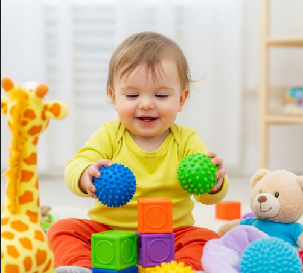

Artikel untuk Mom

Perkembangan5 Cara Menstimulasi Motorik Halus Bayi
Pelajari cara sederhana untuk membantu perkembangan motorik halus bayi sejak dini.
 Nutrisi
Nutrisi
Panduan MPASI untuk Pemula
Tips memulai MPASI agar bayi mendapatkan nutrisi yang cukup dan seimbang.
 Kesehatan
Kesehatan
Jadwal Imunisasi Bayi
Ketahui jadwal imunisasi penting untuk menjaga kesehatan si kecil.
 Tidur Bayi
Tidur Bayi
Tips Bayi Tidur Nyenyak
Cara membuat bayi tidur lebih nyenyak dan teratur setiap malam.
 Parenting
Parenting
Cara Mengatasi Bayi Rewel
Beberapa cara yang bisa Mom lakukan saat bayi sedang rewel.